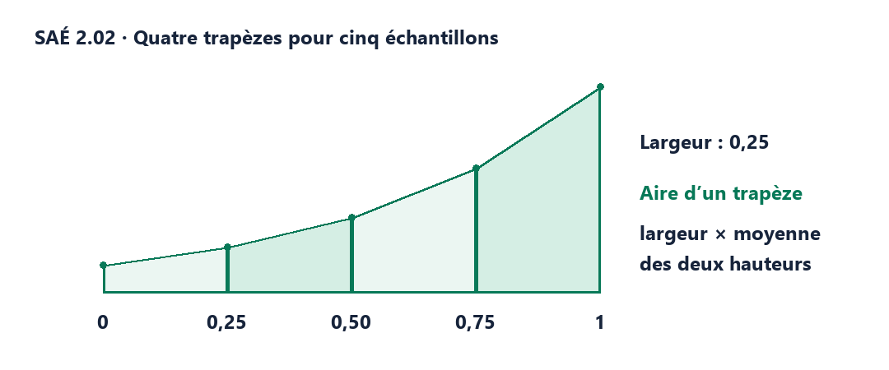

Comprendre le cours
1. Construire le temps et le signal dans MATLAB
Un signal échantillonné est une liste de valeurs enregistrées à des instants donnés. La fréquence d’échantillonnage fe donne le nombre de mesures par seconde. Le pas vaut Te=1/fe. À 40 kHz, le pas vaut 25 µs. Pour N points commençant à zéro, prends t=(0:N-1)/fe. Le dernier point est à (N−1)/fe.
Calcule ensuite les valeurs de la sinusoïde sur tous ces temps. Regarde les unités et le nombre de périodes effectivement couvertes. MATLAB distingue un produit de matrices et une opération élément par élément. Pour élever chaque mesure au carré, emploie par exemple x.^2.
2. Approcher une intégrale par des morceaux
Sur [a,b] avec N points uniformes, il y a N−1 intervalles de largeur h=(b−a)/(N−1). Le rectangle gauche utilise la hauteur au début de l’intervalle. Le trapèze prend la moyenne des hauteurs aux deux extrémités. La méthode de Simpson intègre un polynôme quadratique sur des groupes de deux intervalles et demande donc un nombre pair d’intervalles pour sa forme composite usuelle.

e2t.Pour étudier la précision, fais varier le nombre de points, mesure |calcul−exact|, puis compare aux majorations du sujet. Une courbe logarithmique permet de voir comment l’erreur diminue lorsque le pas se resserre. Garde le même intervalle et la même fonction à chaque calcul.
3. Passer de la trace temporelle au spectre
L’oscilloscope donne des temps et des tensions. Plot d’abord la trace et vérifie que les secondes et les volts sont corrects. Pour un sinus centré, l’amplitude vaut (max(x)−min(x))/2. La moyenne est la composante continue. La valeur efficace vaut sqrt(mean(x.^2)). Pour un sinus idéal d’amplitude A, elle vaut A/√2.
La FFT fournit des coefficients à des fréquences discrètes. L’espacement des points du spectre vaut fe/N. Dans un spectre d’amplitude unilatéral de signal réel normalisé par N, les coefficients intérieurs sont doublés pour regrouper fréquences positives et négatives. La composante continue et, lorsqu’elle existe, la composante à Nyquist ne sont pas doublées.
Avec une FFT directe MATLAB non normalisée et un spectre conservant tous ses coefficients, Parseval donne sum(abs(fft(x)).^2)/N^2 = mean(abs(x).^2). Les deux côtés mesurent un carré moyen. Pour interpréter une puissance en watts sur une résistance R, divise le carré moyen de tension par R.
4. Délimiter et mesurer le canal radio
La largeur à −20 dB du sujet est mesurée par rapport au maximum du relevé autour de la porteuse. Sur la trace lissée, trouve le maximum puis cherche les deux franchissements correspondants autour de ce pic. La bande est la différence fmax−fmin. Garde le même repère en fréquence et précise comment tu choisis les bornes sur une trace discrète.
Pour additionner des puissances, convertis en échelle linéaire. P(W)=10^((PdBm−30)/10). Si le sujet traite chaque valeur comme la puissance par intervalle fréquentiel de largeur df, divise par df pour obtenir une densité en W/Hz. Dans le cas d’une mesure d’analyseur, vérifie aussi ce que l’instrument a exporté pour identifier la bonne largeur de référence. La puissance de bande vaut la somme DSP×df dans le modèle du TP.
Combien de temps sépare le premier et le dernier point du vecteur ?
À 40 kHz, on prélève 40 000 valeurs par seconde, donc deux valeurs voisines sont séparées de 25 µs. Si le vecteur commence à zéro, ses quatre premiers instants sont 0, 25, 50 et 75 µs.
Pour N points à partir de zéro, le dernier instant est (N−1) × Te, où Te est la période d’échantillonnage. Une fenêtre de N échantillons représente N × Te lorsqu’on la prolonge jusqu’au début de la fenêtre suivante. Dessiner les quatre instants lève l’écart apparent d’un échantillon.
| Indice (depuis 0) | 0 | 1 | 2 | 3 |
|---|---|---|---|---|
| Instant (µs) | 0 | 25 | 50 | 75 |
Sigles et acronymes
- DSP · Densité spectrale de puissance
- Puissance répartie par unité de fréquence.
Exemple. Pour obtenir la puissance d’un canal, on intègre sa densité sur la bande. - FFT · Fast Fourier Transform
- Calcul efficace de la représentation fréquentielle d’un signal.
Exemple. La FFT d’un sinus à 1 kHz permet de repérer la composante à 1 kHz. - PWM · Pulse Width Modulation
- Modulation de largeur d’impulsion.
Exemple. Une impulsion à l’état haut pendant un quart de la période a un rapport cyclique de 25 %. - RBW · Resolution Bandwidth
- Largeur de bande de résolution en analyse spectrale.
Exemple. Diminuer la RBW aide à distinguer deux raies rapprochées.
Du cours aux TD et TP
Questions TD & TP
Partie 1 · Vérifier le temps d’échantillonnage
Énoncé. Générer le cosinus du sujet à 40 kHz, expliquer la nature de t et x et justifier combien de périodes sont représentées.
- Calcule
Te=25 µs.test le vecteur des dates etxcontient les tensions correspondantes, dans le même ordre. Affichenumel(t)etnumel(x)pour vérifier les tailles. - Avec la fréquence du cosinus
f₀, comptef₀×(t(end)−t(1))périodes entre les dates extrêmes. La différence entre temps couvert et nombre de points devient visible à la dernière case. - Trace avec
plot(t,x)et contrôle la période en mesurant l’écart entre deux maxima. Si la phase ou l’échantillonnage décalent les maxima observés, considère la résolution de mesure.
Partie 2 · Étalonner le tableur avec l’intégrale exacte
Énoncé. Approcher l’intégrale de e2t sur [0,1] avec 5 points par rectangles et trapèzes et comparer.
- Prends les temps 0, 0,25, 0,50, 0,75 et 1. Dans la colonne suivante, calcule
exp(2*t). Pour les rectangles à gauche, additionne les quatre premières hauteurs et multiplie par 0,25. On obtient environ2,46217. - Pour le premier trapèze, calcule
0,25×(1+e0,5)/2. Fais la même opération sur les trois intervalles suivants et additionne. On obtient3,26081. - L’exact vaut
(e²−1)/2≈3,19453. Les rectangles sous-estiment la fonction croissante. Les trapèzes sont légèrement au-dessus parce que l’exponentielle est convexe. Réutilise ces chiffres pour valider ton programme.
Partie 3 · Comparer le sinus idéal à l’acquisition
Énoncé. Importer le sinus de 1 kHz et le signal PWM 0–5 V à 100 kHz de rapport cyclique 0,2. Mesurer et interpréter les valeurs temporelles et les principales composantes.
- Charge chaque fichier exporté depuis l’oscilloscope, identifie les grandeurs et vérifie par
diff(t)que le pas est régulier. Lis les amplitudes, moyennes et valeurs efficaces à partir du tableau mesuré. - Pour un sinus idéal centré de 5 V crête, on attend environ
3,54 Vefficaces. Pour un PWM idéal de 0 à 5 V à 20 %, la moyenne vaut1 Vet la valeur efficace vaut√5≈2,24 V. Compare les mesures réelles à ces repères. - Attends un fondamental proche de 1 kHz pour le sinus et de 100 kHz pour le PWM. Regarde les harmoniques et la composante continue. Compare le carré moyen et le calcul spectral avant de conclure sur la puissance.
Partie 4 · Lire la largeur à −20 dB et intégrer les puissances
Énoncé. Importer le relevé fréquentiel autour de 27 MHz, appliquer le lissage de la SAÉ, puis trouver la largeur et la puissance du canal.
- Trie les deux vecteurs ensemble selon les fréquences. Contrôle leur longueur et leur espacement. Avec
K=4, chaque moyenne de lissage interne utilise 9 points. Garde la trace originale pour voir l’effet du lissage sur les franchissements. - Repère le maximum de la trace choisie, puis les deux bords autour de ce maximum au niveau relatif −20 dB. Soustrais les fréquences. Consigne la convention si le seuil tombe entre deux points.
- Convertis la mesure de puissance en watts, calcule la densité avec la largeur de référence de la maquette, et somme les contributions linéaires dans la bande. Étiquette clairement la largeur en Hz et la puissance en W ou en dBm après conversion finale.